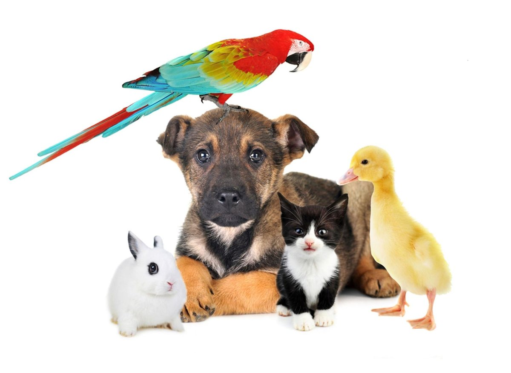
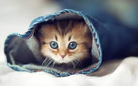
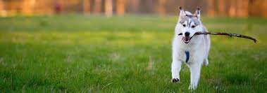

Pets - a humans best friend

Animals are good for humans. They offer emotional support in many situations, they listen, do not judge, and are there when you feel lonely. This is not just the experience of individual pet owners; it's also a fact that has been proven by numerous studies.

Fun facts about cats
While us humans have 206 bones, cats on average have 244. Adult cats have 30 teeth, while kittens have 26. A house cat is genetically 95.6% tiger. Cats can run around 48 kph (30 mph), but only over short distances. Cats can jump 5 times their height.

Why do dogs love to run after a stick?
Dogs love to forage and find treasures, and sticks are readily available. Sticks feel like a reward for the exertion of traipsing through the woods. Sticks carry a musky, earthy smell of woodlands and wild animals, which is attractive to your dog.